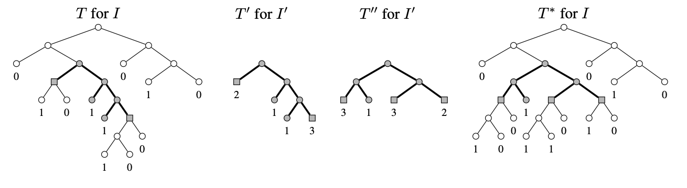

- 平均の深さ 22.63 → 13.45Weka（C4.5）で作った木を DT-SLIM で改善したときの、37 個のデータでの平均（SAT ソルバーの制限時間 300 秒に合わせた設定）。ITI の木では 10.75 から 8.35 になった。
- 37 個中 36 個を改善Weka の木でも ITI の木でも、37 個のデータのうち 36 個で深さが減った（制限時間 60 秒と 300 秒の設定。800 秒の設定では 35 個）。
- australian 53 → 22論文が本文で例に挙げた Weka の木の深さの変化。objectivity では深さが 36.6 から 10.6 に減り、テスト精度は 0.55 から 0.78 に上がった。
深さが最小の決定木を SAT で厳密に求める方法は小さなデータにしか使えず、大きなデータでは貪欲法の深い木に頼るしかなかった
深さの小さい決定木は読みやすく、1 つのサンプルを分類するのに必要なテストの数も少ない。医療の診断のように検査に費用や危険が伴う場面では、この点が特に重要である。しかし、データを誤りなく分ける決定木のうち深さが最小のものを見つける問題は NP 困難である（Hyafil と Rivest 1976）。C4.5 や ITI などの貪欲法は速く、大きなデータにも使えるが、深さを最小にはしない。
そこで、問題を SAT や制約充足問題に符号化してソルバーで最適な木を求める厳密な方法が提案されてきた（Bessiere ら 2009、Narodytska ら 2018、Avellaneda 2020、Janota と Morgado 2020）。これらは貪欲法よりかなり小さい木や浅い木を見つけることが多いが、比較的小さなデータにしか使えない。論文によれば、当時最良の Avellaneda（2020）の方法で求められる木の深さは 12 までである。
この論文は厳密な方法を木全体ではなく木の一部に繰り返し使う。速い貪欲法で最初の解を作り、その一部を SAT で厳密に解き直して改善を重ねる方法を、SAT にもとづく局所改善（SAT-based Local Improvement, SLIM）という。この方法はグラフの分解やベイジアンネットワークの構造学習で成果を上げてきた。著者らはこの考え方を決定木の深さの最小化に持ち込み、実装を DT-SLIM と呼ぶ。
- サンプルの特徴量はすべて 0 か 1 の値をとる。離散値の特徴量は値ごとに二値の識別子を割り当てて二値に直す。
- 決定木 \(T\) がデータを分類するとは、どの葉に届くサンプルもすべて同じクラスをもつことをいう。つまり学習データを誤りなく分ける木だけを考える。
- 深さ \(d(T)\) は根から葉までの最長の道の長さである。DT-SLIM は分類する木を保ったまま、この深さを減らす。
貪欲法の木から部分木を切り出し、その下に続く部分に新しいクラスを付けた小さな分類問題として SAT で解き直す
最初の木 \(T\) から、ノード \(r\) を根とする部分木 \(T'\) を選ぶ。\(T'\) の葉のうち \(T\) では葉でないもの（下にまだ木が続くもの）を \(\ell_1, \dots, \ell_k\) とし、クラスの最大値を \(s\) とする。\(r\) に届くサンプル \(E' = E_T(r)\) に、次のクラス \(C'\) を付けたものを局所インスタンス \(I'\) と呼ぶ。
\(\ell_i\) に届くサンプルには、まとめて新しいクラス \(s+i\) を与える。\(I'\) を分類する木 \(T''\) には、クラス \(s+i\) だけが届く葉（特殊な葉）が必ずある。\(T\) から \(r\) より下を取り除いて \(T''\) をつなぎ、さらに特殊な葉ごとに \(T\) の部分木 \(T_{\ell_i}\) の複製をつなぐと、新しい木 \(T^*\) ができる。定理 1 によれば、\(T^*\) も元のデータを誤りなく分ける。特殊な葉に届くサンプルは \(\ell_i\) に届いていたサンプルの一部なので、その下に \(T_{\ell_i}\) をつなげば正しく分けられるからである。

特殊な葉の下に続く部分木の深さを重みにして重み付きの深さで比べれば、置き換えても木全体は深くならない
\(T''\) が \(T'\) より浅くても、\(T^*\) が \(T\) より深くなることがある。特殊な葉が \(T''\) の深い位置にあり、その下に大きな部分木をつなぐ場合である。そこで論文はクラスごとに重み \(d(c)\) を置く。新しいクラス \(s+i\) の重みは、その下につなぐ部分木の深さ \(d(T_{\ell_i})\)、元のクラスの重みは 0 である。葉 \(\ell\) の重み付きの深さを \(d_{w,T}(\ell) = d_T(\ell) + d(c)\) とし、木の重み付きの深さ \(d_w(T)\) をその最大値とする。
重みは、特殊な葉の下で木がどこまで伸びるかを前もって数に入れたものである。したがって局所インスタンスで重み付きの深さを増やさなければ、置き換えた後の木全体の深さも増えない。さらに、どの葉 \(\ell\) についても \(d(T') \le d_w(T') - d(\ell)\) が成り立つ部分木を安全と呼ぶ。安全な部分木なら、重みを無視してふつうの深さで \(d(T'') \le d(T')\) を満たせば十分である（系 1）。後で述べる部分木の選び方は安全な部分木だけを選ぶので、実装では重みを符号化に入れなくて済む。
サンプルの分割の列で木を表す新しい符号化 DTpb は、節の数が深さに対して指数的に増えない
局所インスタンスは 3 クラス以上になるので、二値の分類しか扱えない既存の符号化はそのままでは使えない。著者らの目的には、既存の符号化のうち Avellaneda（2020）の DTdepth が最もよく合った。DTdepth は決まった深さの完全二分木を符号化するので、深さ \(d\) に対して \(\Omega(2^d)\) 個の節が必要になる。多クラスへの拡張は簡単で、節の数はクラス数の \(\log_2\) 倍に増える。ただし重みを入れるには大きな変更が要る。
新しい符号化 DTpb は木そのものではなくサンプルの分割の列 \(S_0, \dots, S_d\) を表す。分割の各ブロックをグループと呼ぶ。\(S_0\) は全サンプルを 1 つのグループにし、各段では前の段のグループを、ある特徴量が 0 のサンプルと 1 のサンプルに分けるか、そのまま残す。最後の段 \(S_d\) のどのグループも 1 つのクラスだけを含む。定理 3 によれば、このような長さ \(d\) の列があることと、深さ \(d\) の決定木があることは同値である。変数 \(g_{i,j,m}\) は「段 \(m\) でサンプル \(e_i\) と \(e_j\) が同じグループにいる」ことを表す。
符号化の大きさを主に決めるのは深さではなくサンプルの数である。サンプルが少なく、深くて偏った木が必要な問題に向く。重みはクラスごとに許す最大の深さを変えれば入れられる。実験では両方の符号化を組み合わせた。深さを少しずつ上げた人工のデータで実行時間を測り、深さ 10 までは DTdepth、それより深い場合は DTpb を使う。
最も深い葉の近くから部分木を育て、サポート集合で特徴量を減らして、SAT ソルバーが解ける大きさに抑える
局所インスタンスを符号化する前に、特徴量を減らす。クラスの違うどの 2 つのサンプルも、少なくとも 1 つの特徴量で値が違う特徴量の集合をサポート集合という。サポート集合に制限しても、求めた木は元の局所インスタンスを分類する（観察 1）。ただし深さの最適性は失われうる。特徴量を減らすと値がすべて一致するサンプルが 1 つにまとまるので、サンプルの数も減る。サポート集合には次の 2 種類を使う。
- \(T'\) が使う特徴量そのもの。すぐ求まり、サンプルを大きく減らせるが、\(T'\) のノードの並べ替えしかできない。
- ヒューリスティックで求めた小さなサポート集合。特徴量を 1 つずつ外して確かめる方法と、Boros ら（2003）にならって空集合から足していく方法の両方を試し、小さいほうを使う。計算に時間はかかるが、まったく違う部分木を見つけられる可能性がある。
部分木は根 \(r\) を決めてから、深さが上限 \(\hat d\) 未満で、特徴量を減らした後のサンプル数が上限 \(\hat c\) 未満のあいだ、ノードを足して育てる。各回では、その下の部分木が最も深いノードを加える。こうすると偏った部分木が選ばれ、SAT ソルバーがそれを釣り合った形に直して深さを減らせる。選ばれる部分木は安全なので、重みも要らない。
アルゴリズム全体では、まだ調べていない葉のうち最も深いものを選び、根からその葉への道の上で、届くサンプルが \(\hat c\) 以下になる最も根に近いノードから部分木を作る。深さを 1 減らした木を SAT で探し、見つかれば置き換える。見つからなければ道を根の方へさかのぼり、葉が \(T\) の葉でもある部分木、より一般の部分木の順に、特徴量の減らし方を変えて試す。どれでも改善できなければ、その道を調べ終えたものとして記録する。
37 個のデータのうち最大 36 個で木を浅くし、Weka の木の平均の深さは 22.63 から 13.45 になった
データは、UCI 機械学習リポジトリの離散値のデータのうちサンプルが 500 を超えるものすべてと、Narodytska ら（2018）が使ったデータを合わせた 37 個である。特徴量の数は 8〜2195、最初の木の深さは 3〜97 にわたる。テスト用のデータが決まっている 4 個以外は 5 分割の層化交差検証を使うので、実行の数は全部で 169 になる。最初の木は Weka（C4.5）と ITI で、剪定せずに学習データを誤りなく分けるように作った。SAT ソルバーは Glucose 4.1 で、1 つのデータにかける時間は 12 時間、メモリは 8 GB までである。
部分木の深さとサンプル数の上限 \(\hat d, \hat c\) は、SAT ソルバーが制限時間 \(t\) のうちに多くの場合で答えを出せるように決めた。\(t\) = 60、300、800 秒に対し、深さの上限はそれぞれ 12、15、39 で、サンプル数の上限は深さによって変わる（60 秒の設定では 70〜15、300 秒では 300〜90、800 秒では 500〜105）。
| 最初の木 / 設定 | 平均の深さ | 深さの分散 | 平均のテスト精度 | 改善した数 | 最も浅かった数 |
|---|---|---|---|---|---|
| Weka（最初の木） | 22.63 | 436.76 | 0.67 | – | – |
| DT-SLIM、60 秒 | 13.64 | 244.42 | 0.75 | 36 | 1 |
| DT-SLIM、300 秒 | 13.45 | 261.29 | 0.76 | 36 | 6 |
| DT-SLIM、800 秒 | 14.33 | 318.01 | 0.76 | 35 | 15 |
| ITI（最初の木） | 10.75 | 28.80 | 0.77 | – | – |
| DT-SLIM、60 秒 | 8.55 | 22.99 | 0.77 | 36 | 1 |
| DT-SLIM、300 秒 | 8.35 | 22.35 | 0.78 | 36 | 6 |
| DT-SLIM、800 秒 | 8.59 | 29.60 | 0.77 | 35 | 15 |
表1 論文 Table 1（Weka）と Table 2（ITI）。「改善した数」は 37 個のデータのうち深さが減った数、「最も浅かった数」はその設定が 3 つの設定のなかで最も浅い木を見つけたデータの数。
Weka の木は平均して ITI の木の 2 倍の深さがあるが、ノードの数は平均 367 と 320 で同程度である。そのため Weka の木のほうが深さを減らす余地が大きい。設定による差は小さく、60 秒の設定がおおむね最も悪かった。大きなデータでは 12 時間のうちに改善が頭打ちにならなかったので、時間をかければさらに浅くできる。
新しい符号化の効果を見るため、DTdepth だけを使う版（DT-SLIM*）と 300 秒の設定で比べた。Weka の木では、DT-SLIM の木はどのデータでも DT-SLIM* の木と同じかそれより浅く、平均で 34% 浅かった。ITI の木では差は平均 2% にとどまるが、データごとに見ると DT-SLIM の木は DT-SLIM* より 2% 深いものから 20% 浅いものまであった。
浅くした木のテスト精度は平均では下がらず、過学習していた Weka の木では大きく上がる例もあった
最適化に使っていないサンプルでの正解率（テスト精度）を、改善の前後で比べた。平均のテスト精度は、Weka の木で 0.67 から 0.75〜0.76 に上がり、ITI の木では 0.77 から 0.77〜0.78 とほぼ変わらなかった。データごとに見ると、hungarian では深さが 27 から 9.4 に減り、テスト精度が 0.19 から 0.59 に上がった。objectivity では深さが 36.6 から 10.6 に減り、テスト精度が 0.55 から 0.78 に上がった。一方で haberman（0.66 → 0.62）のように下がったデータもある。論文は、剪定しない Weka の木のほうが過学習の影響を強く受けていたと解釈している。
最適性の証明を手放す代わりに、SAT による厳密な求解を数万サンプルのデータに持ち込んだ
- 何を最適にするか：学習データを誤りなく分けることを制約にして、深さを減らす。Bessiere ら（2009）、Narodytska ら（2018）、Avellaneda（2020）と同じ問題設定である。誤分類を許して精度と大きさを釣り合わせる MaxSAT の定式化などとは目的が違う。
- 保証：各部分木は SAT で浅くするが、木全体の深さが最小であることは保証しない。定理 2 と系 1 が保証するのは、置き換えで木全体が深くならないことだけである。サポート集合で特徴量を減らすと、部分木についても最適性が失われうる。
- 規模：厳密な方法を木全体ではなく、特徴量を減らした後のサンプルが最大でも 500 程度の部分木だけに使う。そのため実験には 2 万を超えるサンプルをもつデータも含まれる。代わりに、結果は最初の木を作る貪欲法と、12 時間という時間の上限に左右される。
- 特徴量：二値の特徴量を前提とし、離散値は二値に直す。論文は今後の課題として、二値化せずに非二値の特徴量を扱うことや、SMT の符号化で連続値の特徴量を扱うことを挙げている。非二値の特徴量を SAT で直接扱う研究には Shati らがある。
拡張版は Journal of Artificial Intelligence Research 80 巻（2024）に掲載されている。このページは AAAI 2021 版の内容だけを扱う。
@inproceedings{schidler2021sat,
title = {{SAT}-based Decision Tree Learning for Large Data Sets},
author = {Schidler, Andr{\'e} and Szeider, Stefan},
booktitle = {Proceedings of the AAAI Conference on Artificial Intelligence},
volume = {35},
number = {5},
pages = {3904--3912},
year = {2021},
doi = {10.1609/aaai.v35i5.16509}
}
ページの数値と図は、AAAI'21 に掲載される論文の著者稿として公開された TU Wien の技術報告 AC-TR-21-003（2021 年 1 月）による。AAAI の出版版の本文は確認していない。書誌情報は Crossref による。本文はサンプル数の範囲を 11〜23954 と書くが、Table 3 には \(|E|\) = 59998 の ida と 23955 の ccdefault が載っている。論文中にコードの URL はない。